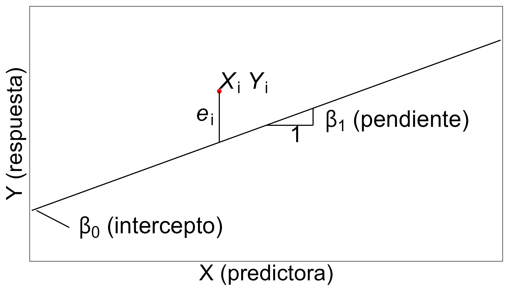
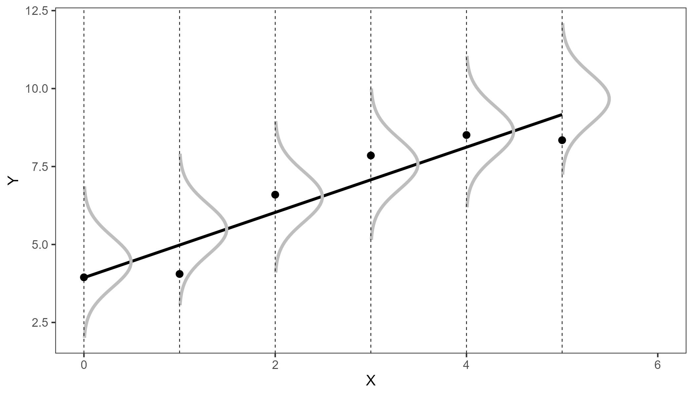
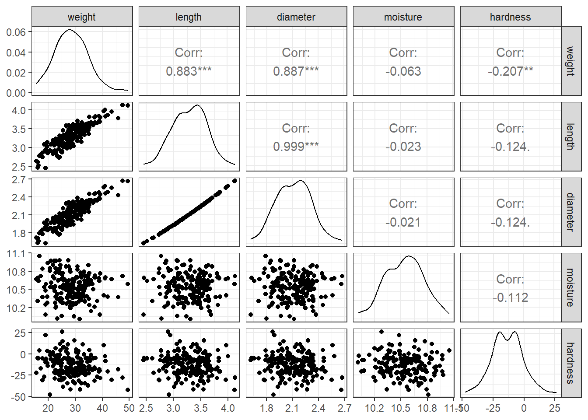
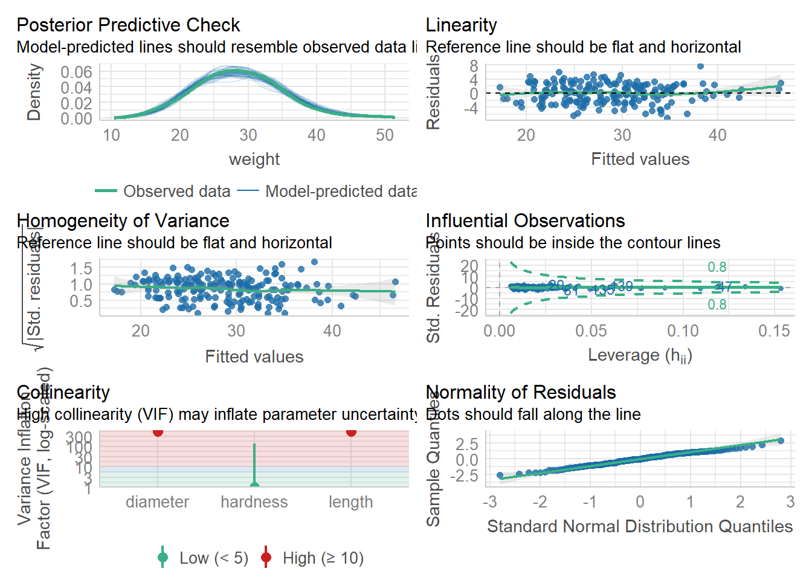
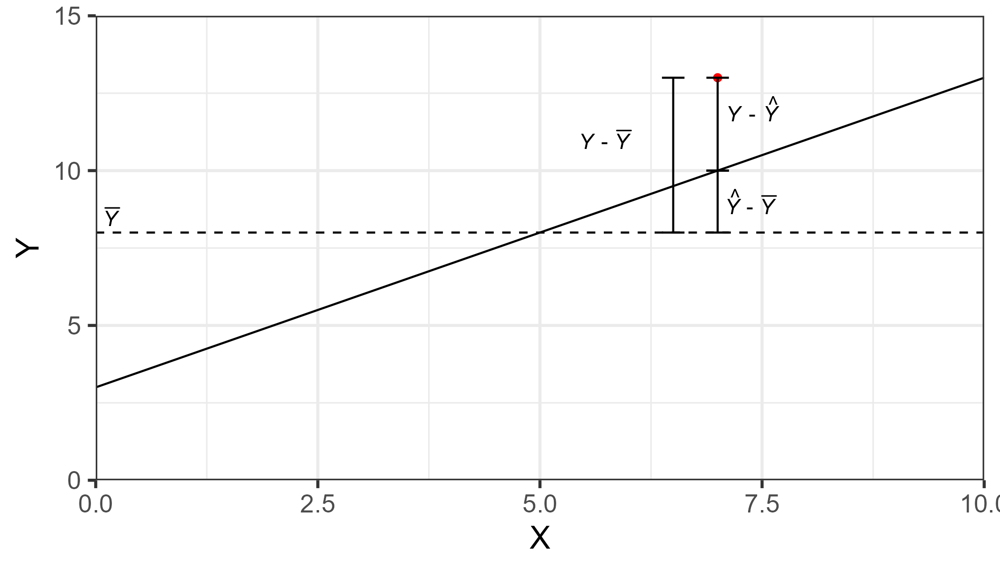
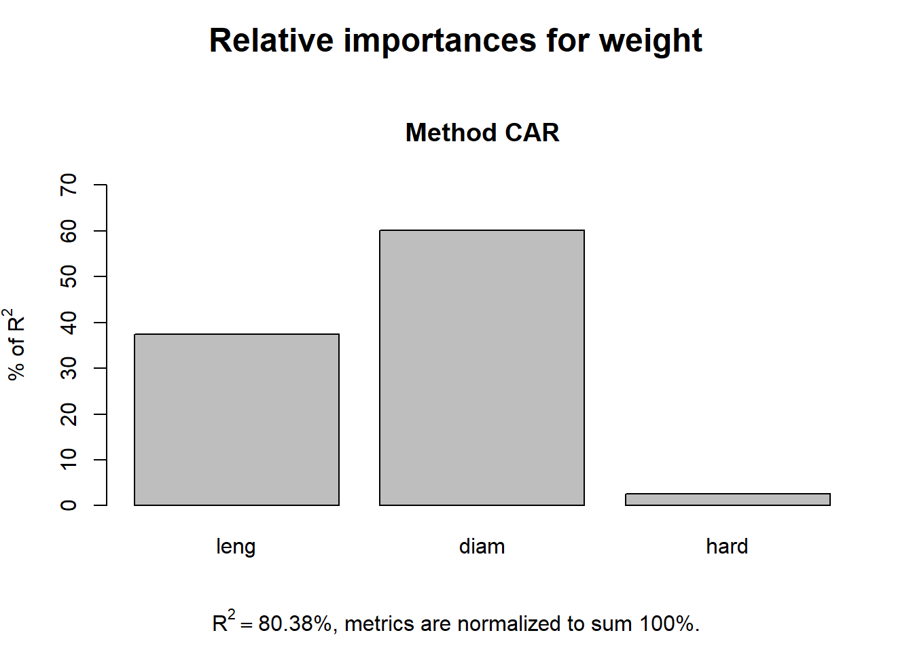
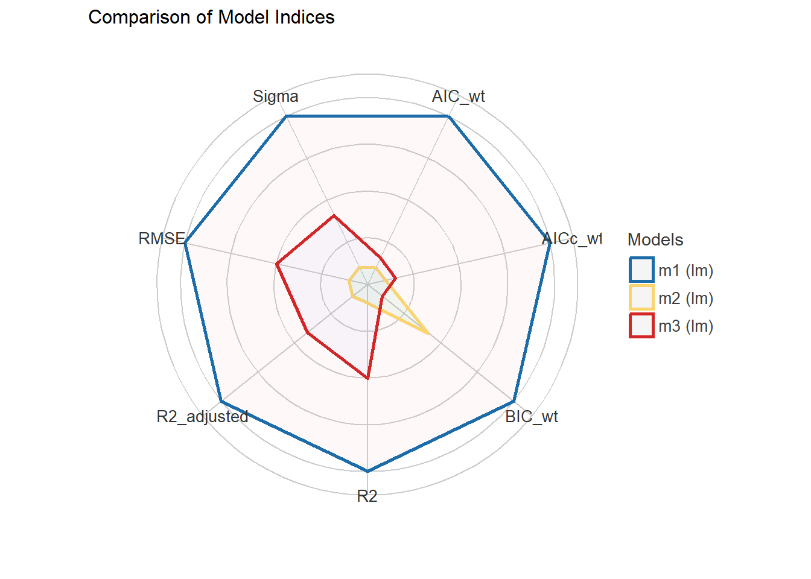
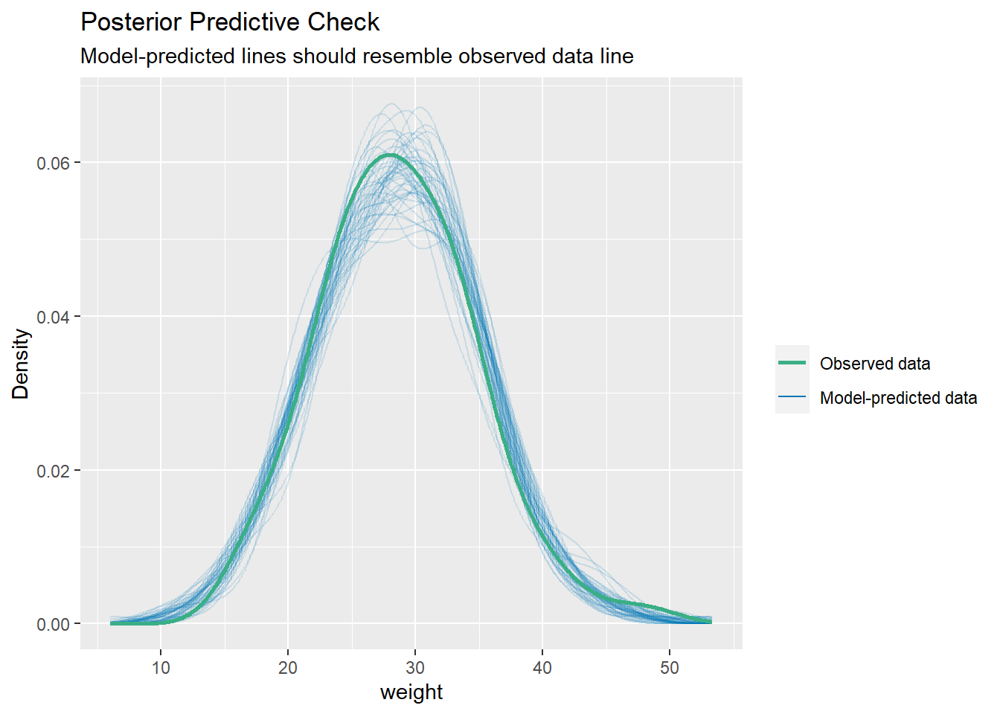
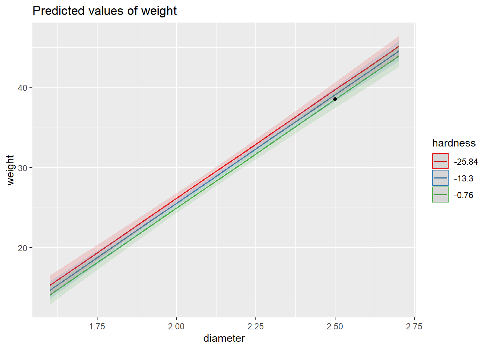
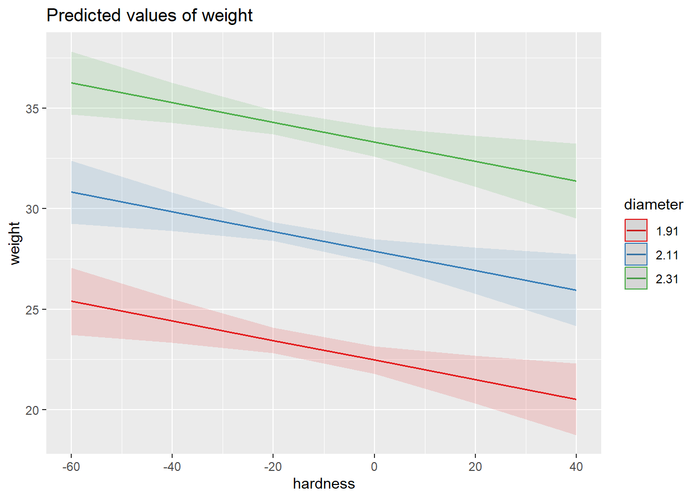

pacman::p_load(
# usos generales
tidyverse,
printr,
# exploracion
GGally,
correlation,
# modelado
performance,
relaimpo,
see,
car,
sjPlot
)
conflicted::conflict_prefer("filter", "dplyr")
conflicted::conflict_prefer("select", "dplyr")Modelos lineales
- Modelo Lineal General - bases
- Ajuste de Modelo
- Verificación de supuestos
- Performance del Modelo
- Predicciones
Modelos lineares - generalidades
ML simple y multiple
We kown that biological processes are complex by nature. They involve many variables and complex interactions. Although SLR models are useful in some scenarios, oftenly they fail at modeling this situations.
MLR allows us building more realistic and interpretable models. Although it has a number of applications, they fall into broad categories. For example, MLR is used as a tool for
Modeling crop yield response to fertilizer rates
Predicting crop yields based on weather, soil, management variables
Identifying variables or factors that explain crop yields
Controlling variation in designed experiments using quantiative covariables (ANCOVA)
Estimating soil properties from easy to measure soil variables and pedotransfer functions (variable substitution)
\[\underbrace{Y}_{\substack{\text{random} \\ \text{variable}}} = f(X)=\underbrace{\beta_0 + \beta_1 X}_{\text{systematic}} + \underbrace{\varepsilon}_{\text{random}}\]
Simplest type of regression model used to relate a response variable Y, also called dependent variable, to a explanatory or independent variable X. Both variables were quantitative.
Although very simple, the model is very restrictive and could have high bias.

This model has 2 parameters, the intercept and the slope, the first one represents the value of the response when the X is 0. The slope represents the change of Y for each unit change of X. If slope is 0, then there is no relation between X and Y.
supuestos
\(X\) is fixed (Model 1) or random (model 2).
\(Y\) is random with \(E(Y|X)=\beta_0+\beta_1X\)
Errors are independent random variables with normal distribution
\[e_\text{iid} \sim N(0,\sigma^2_\varepsilon)\] \[\text{Cov}(e_i, e_j) = 0\]

The straight line summarize the linear relationship between expectation of Y a each value of X. We also see that each observation is a realization from a random variable with normal distribution with expectation conditioned by X and constant variance
Well see that these assumptions are still valid for MLR
Estudio de caso: trigo diploide
Several morphological traits were measured for 190 seeds selected at random from a line of diploid wheat (Triticum monococcum). (Jing et al., 2007)
The goal was to identifying variables associated with differences in seed weight
| ID | weight | length | diameter | moisture | hardness |
|---|---|---|---|---|---|
| 1 | 30.15 | 3.27 | 2.09 | 10.27 | -16.63 |
| 2 | 35.51 | 3.65 | 2.34 | 10.61 | -8.27 |
| 3 | 29.16 | 3.36 | 2.15 | 10.27 | -21.45 |
| 4 | 16.82 | 2.77 | 1.79 | 11.05 | 4.13 |
| 5 | 23.42 | 2.78 | 1.80 | 10.02 | -2.05 |
| 6 | 31.77 | 3.37 | 2.15 | 10.34 | -41.78 |
The variables measured were: weight (mg), diameter (mm), length (mm), moisture content (%), and endosperm hardness (single-kernel characterization system index value)
Exploracion
¿Are there any correlations between variables?
triticum %>%
select(-ID) %>%
ggpairs() +
theme_bw()
si lo prefieren en modo tabla:
triticum %>%
select(length, diameter, moisture, hardness) %>%
correlation()| Parameter1 | Parameter2 | r | CI | CI_low | CI_high | t | df_error | p | Method | n_Obs |
|---|---|---|---|---|---|---|---|---|---|---|
| length | diameter | 0.9990659 | 0.95 | 0.9987559 | 0.9992986 | 316.9951844 | 188 | 0.0000000 | Pearson correlation | 190 |
| length | moisture | -0.0234600 | 0.95 | -0.1652614 | 0.1192918 | -0.3217553 | 188 | 1.0000000 | Pearson correlation | 190 |
| length | hardness | -0.1242600 | 0.95 | -0.2619792 | 0.0184192 | -1.7170749 | 188 | 0.4380616 | Pearson correlation | 190 |
| diameter | moisture | -0.0205691 | 0.95 | -0.1624468 | 0.1221419 | -0.2820887 | 188 | 1.0000000 | Pearson correlation | 190 |
| diameter | hardness | -0.1242389 | 0.95 | -0.2619592 | 0.0184406 | -1.7167784 | 188 | 0.4380616 | Pearson correlation | 190 |
| moisture | hardness | -0.1115795 | 0.95 | -0.2499625 | 0.0312705 | -1.5395141 | 188 | 0.4380616 | Pearson correlation | 190 |
Ajuste de modelo
m1 <- lm(
weight ~ length + diameter + hardness,
data = triticum
)
summary(m1)
Call:
lm(formula = weight ~ length + diameter + hardness, data = triticum)
Residuals:
Min 1Q Median 3Q Max
-7.0265 -1.9818 0.0038 2.1728 7.7197
Coefficients:
Estimate Std. Error t value Pr(>|t|)
(Intercept) -31.95593 2.36468 -13.514 < 2e-16 ***
length -38.24789 14.62271 -2.616 0.009637 **
diameter 87.97672 23.29086 3.777 0.000213 ***
hardness -0.04888 0.01622 -3.014 0.002935 **
---
Signif. codes: 0 '***' 0.001 '**' 0.01 '*' 0.05 '.' 0.1 ' ' 1
Residual standard error: 2.774 on 186 degrees of freedom
Multiple R-squared: 0.8038, Adjusted R-squared: 0.8006
F-statistic: 254 on 3 and 186 DF, p-value: < 2.2e-16Then the summary() function provides the relevenat information for assesing the model as a whole and inspect the parameters
The fitted model:
\[\begin{align} Y_\text{weight} &= -31.95 + (-38.25) X_\text{length} + 87.98 X_\text{diameter} + (-0.05)X_\text{hardness} \end{align}\]
What these coefficients mean?
They are partial slopes: effect of changing an \(X\) but keeping the rest constant.
Unless standardized, they do not show their importance on the model.
Example: \(X_\text{length} = -38.25\) means that for each unit increase in length and holding the remaining predictors constant, the weight would decrease 40.15 units
- Estimating the error of the model
Errors are the difference between observed \(y_i\) and estimated or fitted values \(\hat y_i\) :
\[\begin{align} e_i &= y_i - \hat{y}_i \\ &= y_i - (\hat\beta_0 + \hat\beta_1x_{i1} + \hat\beta_2x_{i2} + \cdots + \hat\beta_px_{ip}) \end{align}\]
and the SSErr is:
\[\text{SSErr} = \sum{(y_i - \hat{y}_i)^2}\]
The mean squared error (MSErr) is:
\[\text{MSErr} = \dfrac{\text{SSErr}}{n-p-1} = \dfrac{\sum{(y_i - \hat{y}_i)^2}}{n-p-1}\]
Finally the estimate of the standard error of the model:
\[\hat\sigma_\varepsilon = \text{RMSE} = \sqrt{\dfrac{\text{SSErr}}{n-p-1}} = \sqrt{\dfrac{\sum{(y_i - \hat{y}_i)^2}}{n-p-1}}\]
We can get it form our model by using sigma() function
sigma(m1)[1] 2.773872How to interpret this?
The lower, the better.
It is the average deviation of a prediction from the observed values
Empirical rule: 95% of the prediction errors fall \(\pm\) 2 RMSE
We can relate it to \(\bar{Y}\)
Verificación de supuestos
check_model(m1)
Looking at the residuals we can check if the model assumptions are supported
Inspecting what is left in the residuals can help us assess if the assumptions are met
¿Is there any pattern left in the residuals?
¿Are the errors normally distributed?
¿Are their variances constant?
¿Any leverage value?
- Multicollinearity
It occurs when some degree of correlation between independent variables exists.
Variance inflation ratio (VIF)
How much variance of a coefficients is increased due to multicollinearity.
\[\text{VIF} = \dfrac{1}{1-R^2_j}\] where: \(R^2_j\) is the \(R^2\) obtained from regressing \(X_j\) against the rest of \(X\)s
Rule of thumb: VIF > 10 might indicate serious multicollinearity.
vif(m1) # from car packageAs expected, length and diameter have huge VIF.
Need to drop one of them o decorrelate them (tip: multivariate approach?)
Assessing the model
anova(m1)| Df | Sum Sq | Mean Sq | F value | Pr(>F) | |
|---|---|---|---|---|---|
| length | 1 | 5683.17526 | 5683.175256 | 738.615324 | 0.0000000 |
| diameter | 1 | 110.17237 | 110.172374 | 14.318581 | 0.0002080 |
| hardness | 1 | 69.90966 | 69.909657 | 9.085826 | 0.0029354 |
| Residuals | 186 | 1431.15173 | 7.694364 | NA | NA |
Applying the sums of squares partition from simple linear regression model
\[\begin{array}{ccccc} & \text{SSTot} & = & \text{SSReg} & + & \text{SSErr} \\ & \sum \left(y_i - \bar{y} \right)^2 & = & \sum \left(\hat{y}_i - \bar{y} \right)^2 & + & \sum \left(y_i - \hat{y}_i \right)^2 \\ \text{d.f.} &n-1 & = & p & + & n-p-1 \end{array}\]

\(\text{SSReg}\) summarizes how much variability of \(Y\) is captured by the model as a whole having the intercept and \(X_1,\dots,X_p\) as predictors.
¿How much \(\text{SSReg}\) is good enough?
\(F_0 = \dfrac{\text{MSReg}}{\text{MSErr}} \sim F_{p;n-p-1}\)
Reject \(H_0\) if: \(P(F_0 > F) \le \alpha\)
Describe ANOVA, mention the overall hipotesis
anova(m1)| Df | Sum Sq | Mean Sq | F value | Pr(>F) | |
|---|---|---|---|---|---|
| length | 1 | 5683.17526 | 5683.175256 | 738.615324 | 0.0000000 |
| diameter | 1 | 110.17237 | 110.172374 | 14.318581 | 0.0002080 |
| hardness | 1 | 69.90966 | 69.909657 | 9.085826 | 0.0029354 |
| Residuals | 186 | 1431.15173 | 7.694364 | NA | NA |
Describe the output, the SSQ
Enough evidence for rejecting \(H_0\) (P < 0.001) thus the overall regression model is statistically significant.
About 80% of the seed
weightvariability is explained by the model havingdiameter,moistue, andhardnessas predictors
Contribucion de variables predictoras
ri_m <- calc.relimp(m1, type = "car", rela = TRUE )
ri_mResponse variable: weight
Total response variance: 38.59476
Analysis based on 190 observations
3 Regressors:
length diameter hardness
Proportion of variance explained by model: 80.38%
Metrics are normalized to sum to 100% (rela=TRUE).
Relative importance metrics:
car
length 0.37367236
diameter 0.60075385
hardness 0.02557379plot(ri_m)
Testing parameters
summary(m1)$coefficients| Estimate | Std. Error | t value | Pr(>|t|) | |
|---|---|---|---|---|
| (Intercept) | -31.9559282 | 2.3646825 | -13.513835 | 0.0000000 |
| length | -38.2478907 | 14.6227136 | -2.615649 | 0.0096369 |
| diameter | 87.9767208 | 23.2908627 | 3.777306 | 0.0002132 |
| hardness | -0.0488784 | 0.0162157 | -3.014270 | 0.0029354 |
Reajustes del modelo
How to decide which variables to include?
Context information about the problem
Exploratory analysis: correlations, scatterplots
Examining partial residuals (model mispecification)
How to evaluate models?
Don’t use \(R^2\) as metric: the more predictors, the higher \(R^2\).
Use metrics that penalize for model complexity: AIC, BIC, Cp, Adj \(R^2\)
Training/test or cross-validation approaches
There are automatic algorithms like stepwise for variable sepection:
m2 <- update(m1, . ~ . -length)
m3 <- step(m2, scope = list(upper = ~ .^2))Start: AIC=396.51
weight ~ diameter + hardness
Df Sum of Sq RSS AIC
+ diameter:hardness 1 23.4 1460.4 395.49
<none> 1483.8 396.51
- hardness 1 69.5 1553.3 403.21
- diameter 1 5497.8 6981.6 688.76
Step: AIC=395.49
weight ~ diameter + hardness + diameter:hardness
Df Sum of Sq RSS AIC
<none> 1460.4 395.49
- diameter:hardness 1 23.436 1483.8 396.51After removing length to avoid colinearity with diameter, assuming diameter is easier to measure
We can run stepwise using step function which by default perform the procedure in both ways, forward and backwards. Optionally we can provide the scope limits. In this case, the first order interaction
In both direction algorithm each forward step is followed by a backwards selection to remove those terms that became not significant after addition. The step() function uses the AIC as criterion for comparing models.
In the example, it started by adding the interaction term and compared the new model with a model initial model (none) and a simpler model without hardeness + diameter.
After that it test the removal of this term. No further removal is tried because of the hierarchy principle: if an interaction is retained, also terms involved in the interaction must be present.
The summary of the model shows that the addition marginal improved the overall performance of the model (less residual standard error, higher R2)
plot(compare_performance(m1, m2, m3))
Modelo final
summary(m2)
Call:
lm(formula = weight ~ diameter + hardness, data = triticum)
Residuals:
Min 1Q Median 3Q Max
-6.8364 -2.2099 0.1632 2.1060 8.3992
Coefficients:
Estimate Std. Error t value Pr(>|t|)
(Intercept) -29.31312 2.17109 -13.50 < 2e-16 ***
diameter 27.11379 1.03006 26.32 < 2e-16 ***
hardness -0.04874 0.01647 -2.96 0.00347 **
---
Signif. codes: 0 '***' 0.001 '**' 0.01 '*' 0.05 '.' 0.1 ' ' 1
Residual standard error: 2.817 on 187 degrees of freedom
Multiple R-squared: 0.7966, Adjusted R-squared: 0.7944
F-statistic: 366.2 on 2 and 187 DF, p-value: < 2.2e-16anova(m2)| Df | Sum Sq | Mean Sq | F value | Pr(>F) | |
|---|---|---|---|---|---|
| diameter | 1 | 5741.09263 | 5741.092634 | 723.540177 | 0.0000000 |
| hardness | 1 | 69.52273 | 69.522728 | 8.761832 | 0.0034743 |
| Residuals | 187 | 1483.79365 | 7.934725 | NA | NA |
tab_model(m2)| weight | |||
| Predictors | Estimates | CI | p |
| (Intercept) | -29.31 | -33.60 – -25.03 | <0.001 |
| diameter | 27.11 | 25.08 – 29.15 | <0.001 |
| hardness | -0.05 | -0.08 – -0.02 | 0.003 |
| Observations | 190 | ||
| R2 / R2 adjusted | 0.797 / 0.794 | ||
Model predictions
out <- check_predictions(m2)
plot(out)
Cuánto será el peso del grano si tengo diameter=2.5 y hardness=-1
new_data = data.frame(diameter = 2.5, hardness = -1)
new_data <- new_data %>%
bind_cols(predict(m2, newdata = new_data, interval = "confidence")) %>%
rename(weight=fit)plot_model(m2, type = "pred", terms = c("diameter", "hardness"))+
geom_point(data=new_data, aes(x=diameter, y=weight),
inherit.aes = FALSE)
plot_model(m2, type = "pred", terms = c("hardness", "diameter"))
Se nota la mayor importancia de diameteren este grafico no?
Otra forma mas facil de usar el modelo…
library(ggeffects)
ggpredict(m2, terms = c("diameter [2.5]", "hardness [-1]"))| x | predicted | std.error | conf.low | conf.high | group |
|---|---|---|---|---|---|
| 2.5 | 38.5201 | 0.510608 | 37.51281 | 39.52739 | -1 |